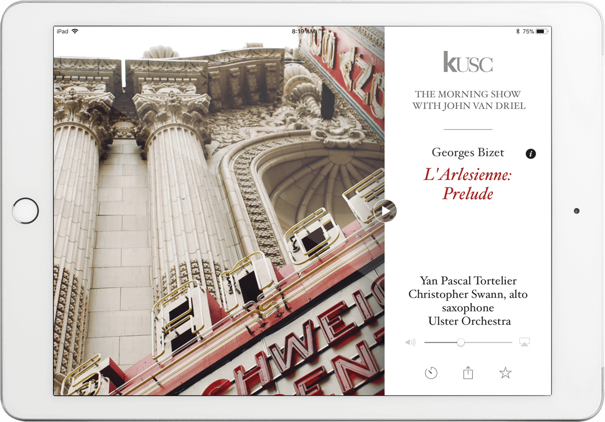
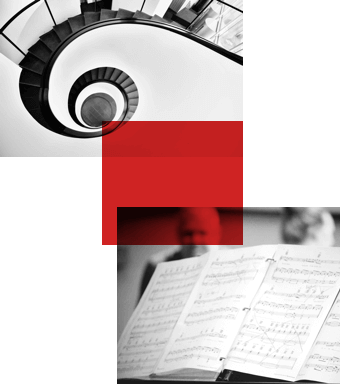

A radio streaming application for iOS and Android
STORY
A little behind story of KUSC
-
1946
KUSC started as a student-run radio station back in 1946 on the grounds of the University of Southern California. In a short time, it has managed to become the most listened non-profit radio station of the classical music across all USA with a little push from modern technologies.
-
1978
It all began with building a 250-foot radio tower on campus with a little help from alumni, growing to become a national standard for classical music radio. By 1978, KUSC has been airing classics 24/7, gathering the largest audience of any public radio station in the USA.
-
2016
Celebrating 70th anniversary in 2016, the station continues its mission of preserving and growing the appreciation for classical music on the air. We, too, have added out fair share and made it possible for Kusc to go mobile and be available to listeners from any part of the world.
TASK
We had to
Build a native radio streaming application for several platforms by:
-
Developing a sophisticated and contemporary UI/UX
-
Improve and bug-fix the code base using Swift 4.x of the existing iOS application
-
Building an app for Android from scratch with Kotlin
FEATURES
KUSC main components
-
Radio streaming
Users all around the world can listen to their favorite minutes, symphonies, suites, and overtures from any device be it a PC, a tablet, a smartphone or a TV.

-
Program schedule
Program schedule gives a quick overview on what’s expected to be on air at any day of the week.
-
Sleeping timer
The app offers users to set up a sleeping timer so they would be able to nod off while listening to the favorite tunes.
-
Personal account
New users can set up their accounts to review their activity on the app or check out the names of the most liked pieces.
-
Favorites & Sharing
And the last, but surely important feature is to save a piece as a favorite or share it with friends and colleagues with a simple tap.

TOOLS
Tech we used
-
Storing of the users’ data - Parce
-
Quick authentication - Facebook, Twitter APIs
-
Streaming library - RadioTunes
-
Analytics of users and their preferences - Google Analytics, Fabric
SUMMARY
All in all
We were happy to take part in creating a mobile application for a famous radio station. Our team put a lot of efforts into making it a beautiful and seamless product that listeners will enjoy.
We have improved the design and updated the streaming to make it fit the world-known classics. Together with our client, we have laid out a foundation for the further KUSC development in the form of application, as we continue to make it better.